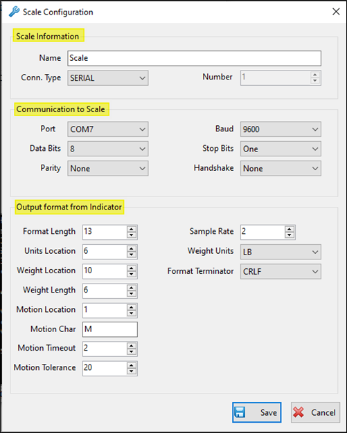

Device Hub
Device Hub for Fulcrum allows for reading weight (via a secure channel) from your scale indicator directly into the Fulcrum application.
It can also facilitate sending/receiving data from other local devices such as cameras and printers.
This feature can be used for Ticketing and other areas of Fulcrum.
Download/Install Fulcrum Device Hub
From the Admin Menu, click on 'Download and Install Device Hub'.
On the Download and Install Device Hub main screen, click the 'Download Setup for Device Hub' button at the bottom of the page.
Once the installation is finished, you can access Fulcrum Device Hub from the Windows Start Menu.
Configuring Device Hub
From the Start Menu, launch the Fulcrum Device Hub application.
If a new version of Device Hub is available, you will have the option to download and install or skip the update.
General Settings
In the Device Hub application, click Setup and choose General Settings from the drop down list.
\
|
Fulcrum URL |
Fulcrum application URL (https://app.smsturbo.com) |
|
User (Email) |
Valid Fulcrum user login. |
|
Customer # |
Customer number can be found in Admin Menu--> About (only accessible to users with Admin permissions). |
|
Hub Key |
The Hub Key can be found in Admin Menu--> About (only accessible to users with Admin permissions). |
Add Printer
Under Setup, click on 'Add Printer'.

Printer setup will show a list of Windows available printers. Select your printer from the list and the number of copies you would like printed.
Click Save to return to the Device Hub main screen.
You will now see the Printer in the device hub main window and the connection status, along with how many print requests have been received, how many requests
have been printed, any errors that occurred while trying to print.
Add New Scale
Under Setup, click 'Add new scale'.
Add a Simulated Scale
To setup a simulation scale, select 'SIM' from the Conn. Type drop down menu and give your scale a name.
SIM scales do not need to be configured as they're not actually reading from a scale, just providing the ability to manually enter weights for testing purposes only.
Click Save to apply changes or Cancel to return to main screen without saving.
Weight can be manipulated by left-click and hold on your mouse and then sliding the blue pointer to the left (decrease weight) or right (increase weight).
To configure the scale or delete the scale after it's been added, right-click on the scale from the main window.
Add a Serial Scale
To setup a serial scale, select 'SERIAL' from the Conn.Type drop down menu and give your scale a name.
Configure the scale based on your scale indicator settings (you may have to contact a scale tech or person(s) that installed the scale to retrieve this information).

Scale Information
|
Name |
Give your scale a name. |
|
Connection Type |
Valid Fulcrum user login. |
|
Number |
Customer number can be found in Admin Menu--> About (only accessible to users with Admin permissions). |
Communication to Scale
|
Port |
COM port number that the scale is connected to. |
|
Baud |
Rate that information can be transferred (9600 is the standard default). |
|
Data Bits |
Measures the actual data bits in communication. |
|
Stop Bits |
Represents the last bit of a single packet. |
|
Parity |
Can be set to Odd or Even. Provide a simple form of error detection |
|
Handshake |
Handshaking is used to prevent receiver overloading. By using Handshaking signals, receivers will be able to tell the sending device to pause data transmission if the receiver is overloaded. |
Output from Indicator
|
Format Length |
The count of ALL characters in the data stream. Note that all characters count as one each,except any characters that are wrapped in (). These bracketed characters (including the brackets) count as one. |
|
Sample Rate |
Should stay set at 2. This is how many samples of the data stream that ScaleCOM will take before accepting a good weight reading. |
|
Units Location |
If the units location is "LB" you will count from left to right the number of characters there are until the "L". |
|
Weight Units |
This is the unit of measure that the scale is running in (usually LB). |
|
Weight Location |
The character in the weight string that you start reading the scale weight. |
|
Format Terminator |
In almost all cases this is CRLF or (0D) the last set of characters in the string. |
|
Weight Length |
Usually 6. The max length of weight. Example 120000 LBs. |
|
Motion Location |
The location of the character that shows when there is motion on the scale. |
|
Motion Char |
This is the character that shows when there is motion on the scale. |
|
Motion Timeout |
(in seconds) The time waited for the motion on the scale to stop. |
|
Motion Tolerance |
The amount of tolerance (weight) allowed to not consider the scale in motion. |
Once you've entered your scale configurations, click Save on the bottom of the screen to be returned to the main Device Hub window.
You will now see the scale in the device hub main window and the connection status and weight currently on the scale.
Add Camera
Under Setup click 'Add Camera'.
Enter your camera details to add or configure a camera.
\
|
Camera Name |
Enter a name to identify your camera. |
|
URL |
The URL of your camera and location screenshots are stored. Check your camera configuration to ensure you have the proper URL format. |
|
User |
Optional. Enter camera login credentials if required |
|
Password |
Optional. Enter camera login credentials if required |
|
Default Brand |
Click the drop down arrow to display a list of common camera brands, if your brand is listed select it and click apply. The URL will automatically be filled in with the correct URL format. Make sure to change the <IP:PORT_HERE> to your own camera IP and port. |
Once you've entered your Camera configurations, click Save on the bottom of the screen to be returned to the main Device Hub window.
You will now see the Camera in the device hub main window and the connection status, along with how many screenshots have been received, how many requests have been handled,
any errors that occurred while taking a screenshot and it will also show you a thumbnail of the last image captured.
Terminal
Under Setup, click 'Terminal'.
The Terminal option can be used to determine a connection to the scale and confirm the correct scale settings are being used in scale configuration.
At the bottom of the screen under Serial Port Settings, pick your scale COM port, baud rate, data bits, stop bits and parity from the drop down menus.
Click the 'Open Port' button.
Once the port is open, you will see the data output sent from your scale in the top window.
To check data output manually, enter command and click send.
Created with the Personal Edition of HelpNDoc: Create cross-platform Qt Help files